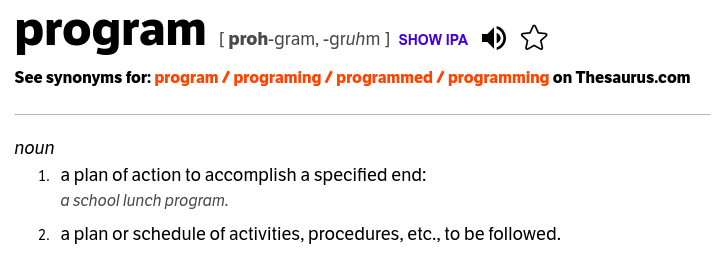
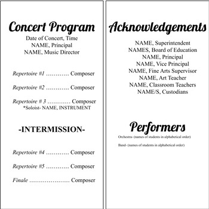
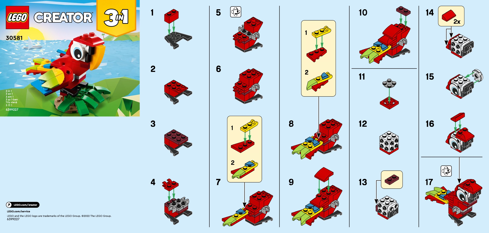
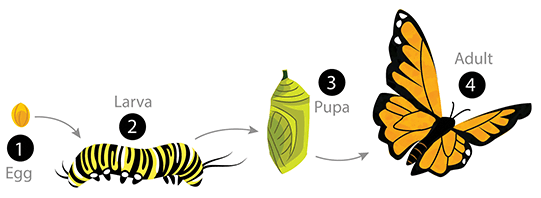
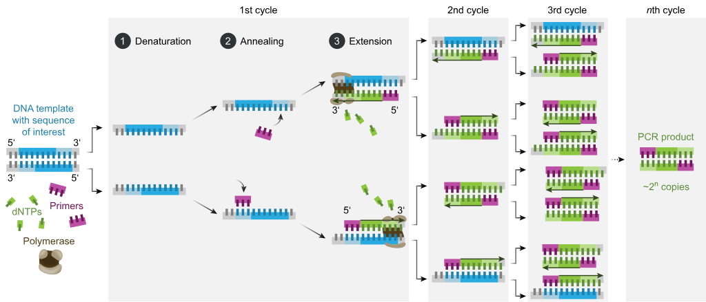
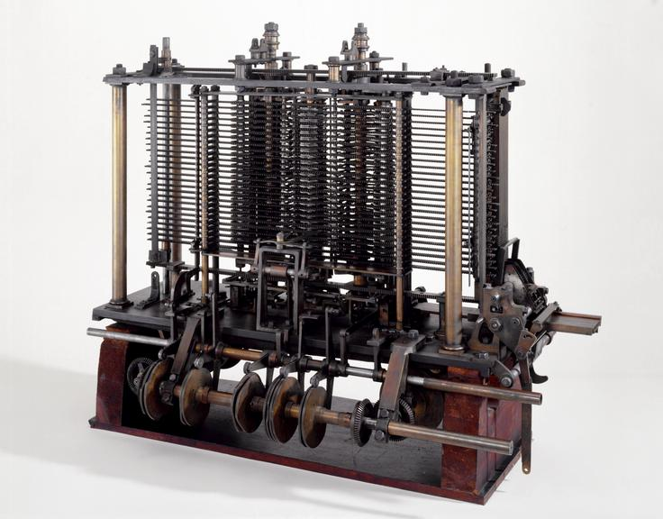
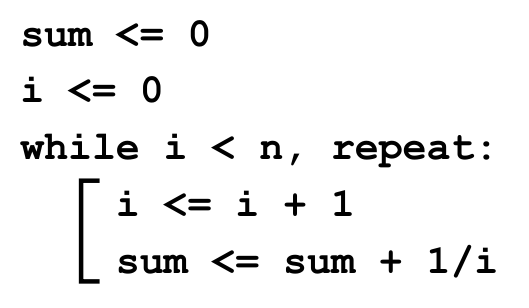
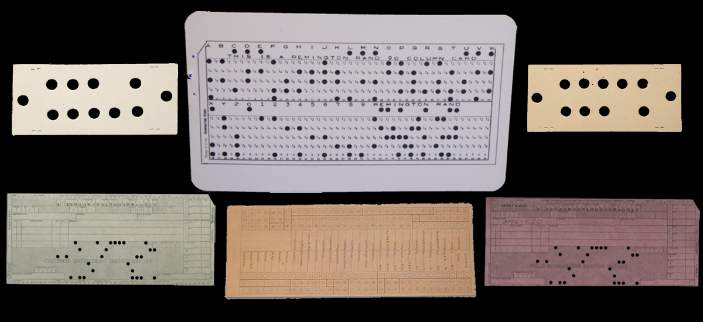
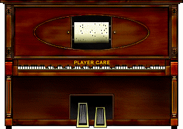
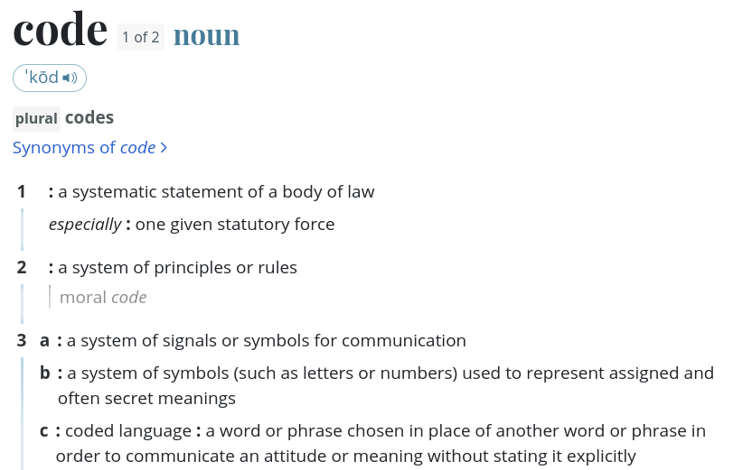

01-17-24 (Wednesday)
Dear Heavenly Father,
As we gather here today to embark on a new journey of learning, we invite Your presence into this classroom.
Bless each student with wisdom, understanding, and a thirst for knowledge. Let Your light shine upon us, illuminating the path of learning, so we may contemplate your beauty and love in everything you made.
May this classroom be a place of respect, fellowship, and growth. Help us to be open to new ideas, to embrace challenges, and to support one another in our academic endeavors. Bless this class so that it may be a space where minds are enriched, friendships are formed, and hearts are touched.
Guide our imaginations and desires towards your love and justice, so that we may respond adequately to your call to be Christ’s agents of renewal in the world.
Through our Lord Jesus Christ, your Son, who lives and reigns with you in the unity of the Holy Spirit, one God, for ever and ever.
Amen.
1 Presentations
Take some minutes to present yourself to someone who you don’t know.
2 Read syllabus (in website)
3 Program
- Programming = writing programs. What are programs?



3.1 Programs are forms of wisdom


22 “The Lord brought me forth as the first of his works, before his deeds of old; 23 I was formed long ages ago, at the very beginning, when the world came to be. 24 When there were no watery depths, I was given birth, when there were no springs overflowing with water; 25 before the mountains were settled in place, before the hills, I was given birth, 26 before he made the world or its fields or any of the dust of the earth. 27 I was there when he set the heavens in place, when he marked out the horizon on the face of the deep, 28 when he established the clouds above and fixed securely the fountains of the deep, 29 when he gave the sea its boundary so the waters would not overstep his command, and when he marked out the foundations of the earth. 30 Then I was constantly at his side. I was filled with delight day after day, rejoicing always in his presence, 31 rejoicing in his whole world and delighting in mankind. Proverbs 8.22-31
4 Computation
- We use programs to compute numbers.
4.1 Automatic computation
- Charles Babbage is known for developing the first automatic computer machine (1820’s)
- “the faster and more reliably one could calculate, the more money businesses could make.”


- Ada Lovelace, daughter of Lord Byron, became enamoured by Babbage’s machine and developed the first algorithm, to calculate a sum of numbers:

4.2 Algorithm
- Basically, a program: a description of a series of operations.
- But with some specific features:
- Precise and unambiguous steps
- Definite results
- Finite
- Generalizable (works with a range of possible inputs)
- Usually expressed through abstract/mathematical notation
4.3 STEM today is programming computations
- For complex calculations, we don’t rely anymore on pressing calculator buttons. We have to make automatic computation programs
5 The pictionary game
- How difficult it is to describe to someone how to draw something?
- Instructions may be ambiguous
- Different backgrounds, ways of interpreting…
- So happens with programming. The drama of programming is the drama of all human communication/expression…
5.1 Example: Drawing a rectangle
Say to a computer “Draw a red rectangle in the top left corner of the screen.”
- What shade of red, precisely?
- How big should the rectangle be?
- Exactly in the top left, or with some padding, and how much?
- When should it be drawn?
- What is the “top” of the screen on a mobile device that can be rotated?
Code in Javascript:
// Get the canvas on the webpage that we want to render to.
let c = document.getElementById("myCanvas");
// Ask the canvas for an object that knows how to render 2-dimensional graphics onto the canvas.
let renderer = c.getContext("2d");
// Set the color to render, then draw a 100 x 100 pixel rectangle.
renderer.fillStyle = "rgb(255, 0, 0)";
renderer.fillRect(0, 0, 100, 100);- Notice that many things that do not matter when we give instructions to other people actually do matter for the computer. And vice-versa…
- Why is that?
6 Code
- Initially, computer operators had to set the program manually to run…
6.1 Punched cards
- At the end of the 1800s, Herman Hollerith invented the punched card, to be automatically read by a machine.
- Instructions were then CODED in the punched card.


6.2 Grace Hopper’s proposal
- Later, in 1949, Grace Hopper invented the first programming language: COBOL (COmmon Business-Oriented Language)
- For example, the user would write:
COMPUTE SUM = (1 + 3)DIVIDE SUM BY 2 GIVING AVERAGE
- For example, the user would write:
- Crucial to this was the development of the compiler: a program capable of converting a sentence very much like an English phrase (with syntax and semantics) into machine instructions.
6.3 So, what’s a code?
- “A program that follows a set of rules” (in order to be correctly interpreted)
- To learn how to program, then, is to learn how to express yourself correctly through the code
- Notice the origin of the word - codex

6.4 Python programming language
- Invented in the early 1990s by Guido van Rossum, named after Monty Python’s Flying Circus
- Open source project
- High-level, general-purpose language
- Widely available, easy to learn, rich in tools and libraries, and portable